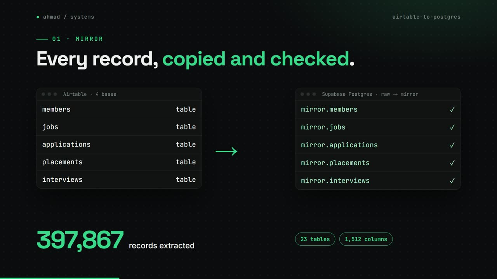
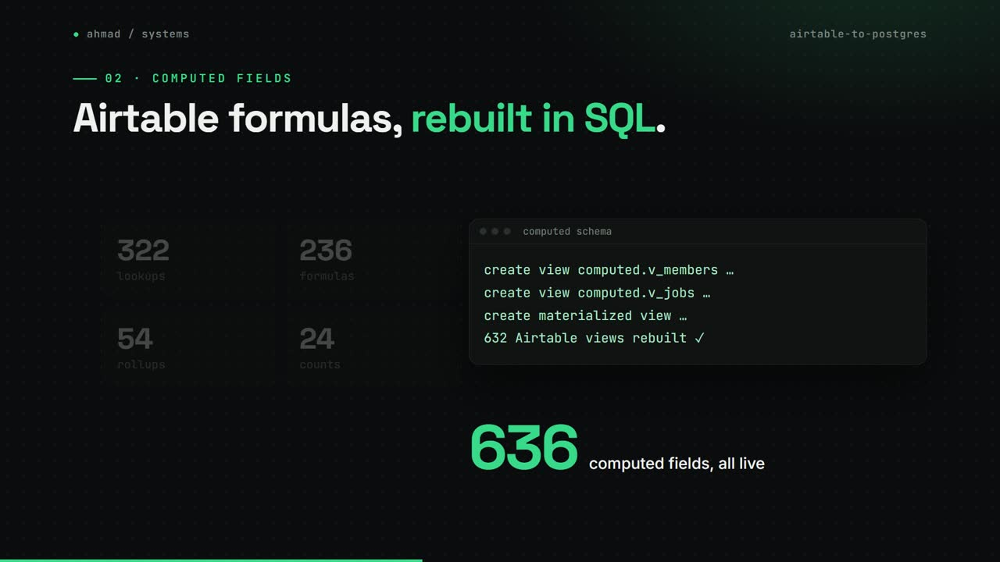
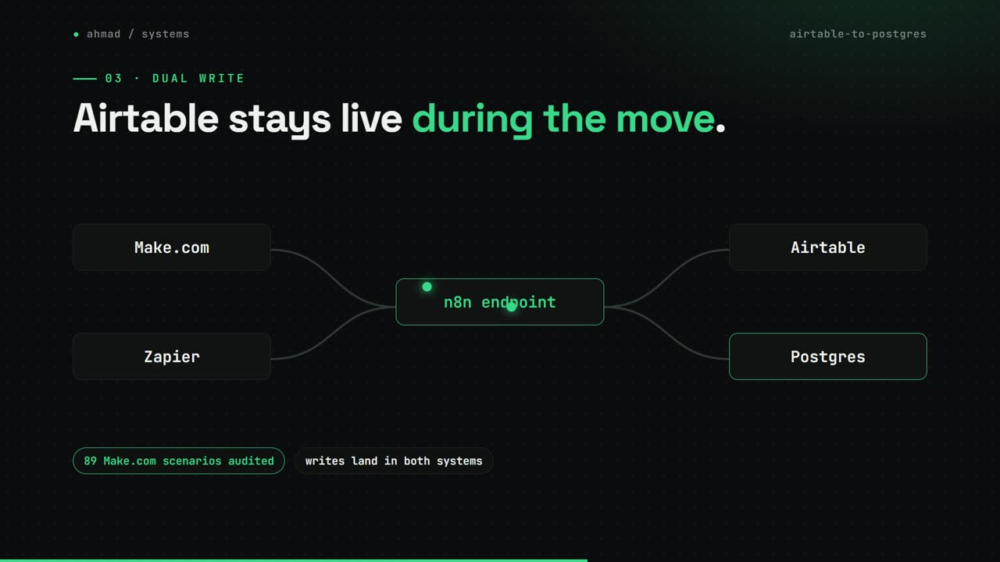
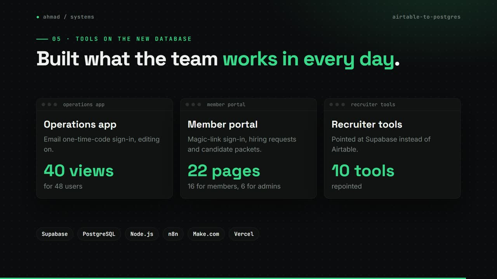

Airtable to Postgres
Moving a US talent marketplace off Airtable while the business kept running.
my role Forward Deployed Engineer: led the migration and built the tools on top. 49 of 58 commits.
The problem
A recruiting marketplace ran its whole business on four Airtable bases, hundreds of computed fields and dozens of Make.com scenarios. It needed a real database without breaking the automations and tools its team used every day.
How it works
- Extract every base into raw JSON in Postgres, then generate a one-to-one mirror schema.
- Rebuild every Airtable view and compile every computed field into SQL views and materialized views.
- Keep Airtable live: Make.com and Zapier write to both systems through an n8n endpoint.
- Rebuild Airtable-only automations on n8n and point the recruiter tools at Supabase.
- Run parity checks, find the gaps and fix them until both sides match.
What changed
- 397,867records extracted
- 636computed fields rebuilt as live views
- 632Airtable views rebuilt in Postgres
- 99.985%row parity across about 230k rows
- 89Make.com scenarios audited
What I built
- The extraction and mirror pipeline, and the computed-field compiler.
- An operations app with 40 views for 48 users, and a member portal with magic-link sign-in.
- The parity checks and the fixes that brought row parity to 99.985%.
Stack
- Supabase
- PostgreSQL
- Node.js
- n8n
- Make.com
- Zapier
- Vercel
Stills



